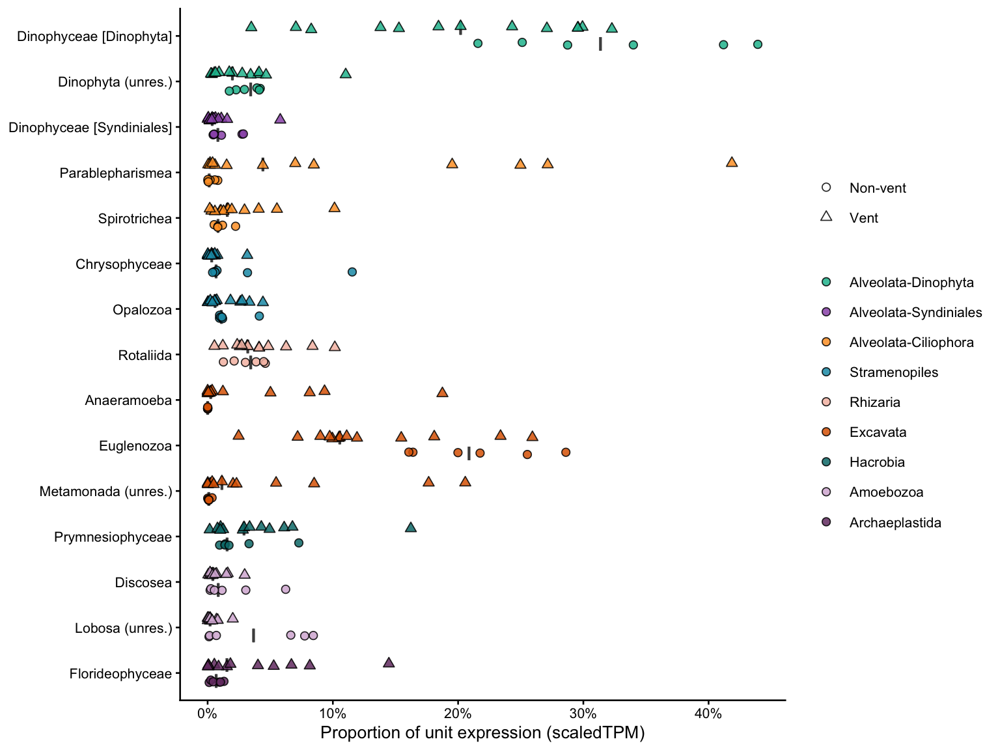
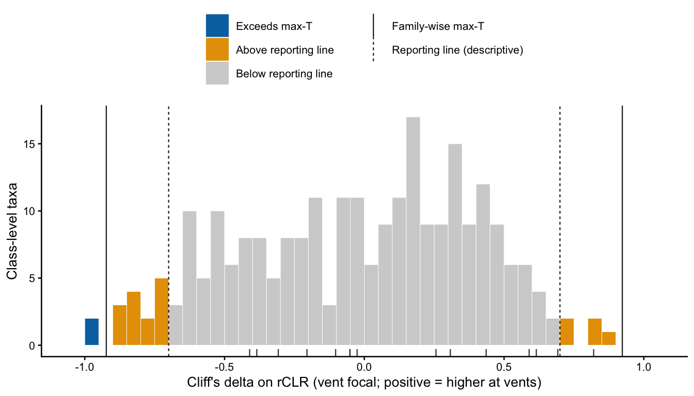
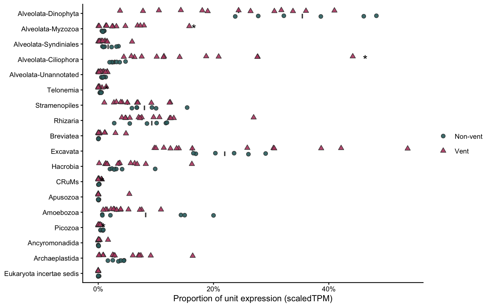
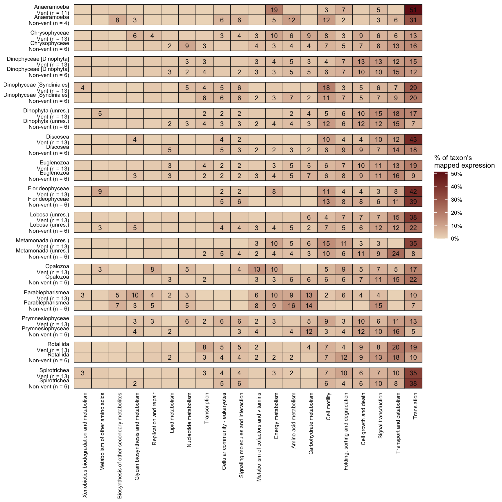
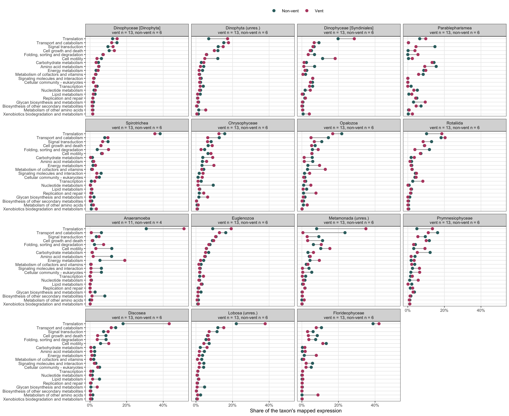
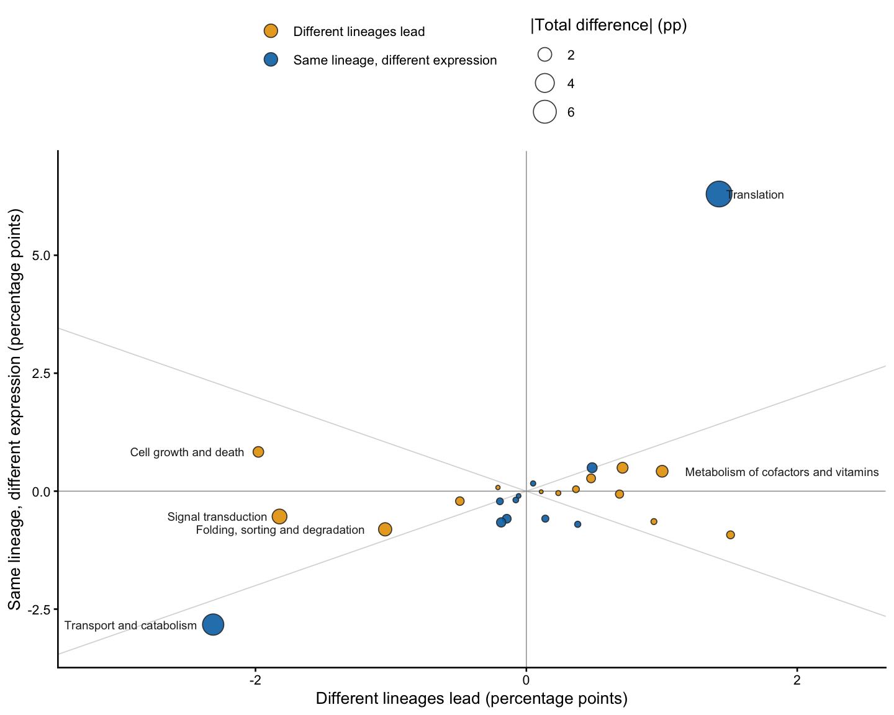
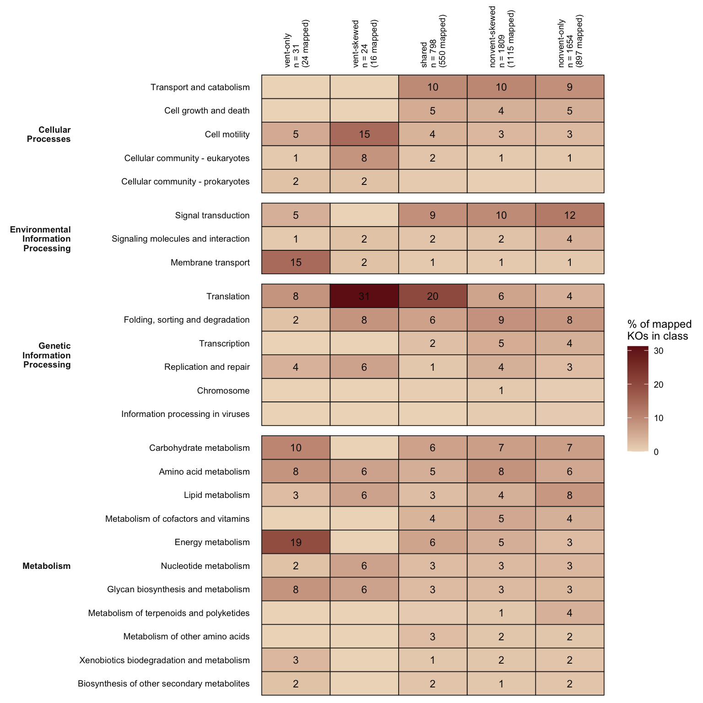
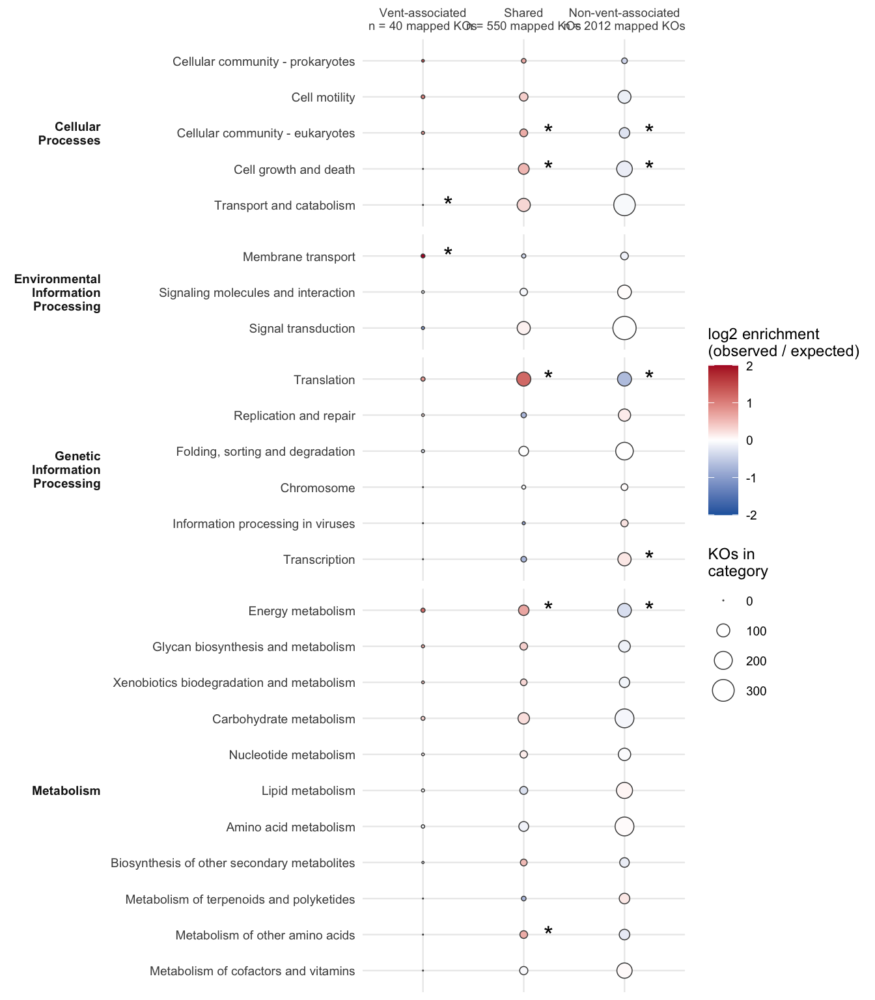

Code
source(if (file.exists("_setup.R")) "_setup.R" else "scripts/_setup.R")Frenemies euk metaT — curated taxonomy, sample-unit level
Hu Lab
October 23, 2026
Who leads the vent and non-vent signatures: each class-level taxon’s share of expression and its occupancy, with the shares summed to supergroup (the 02 curated groups).
What dominant taxa comprise vent and non-vent: KEGG BRITE level-B composition of each habitat, and of each leading taxon.
Habitat classes for every KO and taxon (vent-only, vent-skewed, shared, non-vent-skewed, non-vent-only). The KO table is the hand-off to 06 and 07.
Rarefied sensitivity: the habitat classes recomputed at equal sequencing depth.
All of it is descriptive (occupancy and relative share).
Unit expression. Throughout this document, a unit’s expression is the scaledTPM that remains after Eukaryota-only and Opisthokonta assignments are removed, averaged over the unit’s replicates. Every proportion below is taken against that total.
Detection. A feature is detected in a sample unit when its unit total is ≥ detect_min_tpm (1) scaledTPM and ≥ detect_min_per_million (10) per million of that unit’s expression. scaledTPM carries library size (Soneson, Love & Robinson 2015, F1000Research 4:1521), and unit expression differs about 170-fold among units, so a TPM floor alone lets deep units detect more. The per-million floor protects deep units; the TPM floor protects shallow ones.
Occupancy. Associated with a habitat = detected in ≥ 30% of its units (occupancy_min_frac: ≥ 4 of 13 vent units, ≥ 2 of 6 non-vent units). A fraction rather than a count, so the bar is the same height in both habitats. Vent-only is strict: vent-associated and detected in no non-vent unit.
Shares are relative. A smaller share at vents means a smaller slice of protist expression, not fewer cells.
FIELDS_IN_SCOPE <- c("Gorda Ridge", "Von Damm", "Piccard")
CHOSEN_DEPTH <- 4 # grain locked in 02
MIN_TPM <- params$detect_min_tpm # 1
MIN_PER_MILLION <- params$detect_min_per_million # 10
OCC_MIN <- params$occupancy_min_frac # 0.30
N_LEADERS <- 10 # top taxa per habitat shown
N_RAREFY <- 20 # rarefaction draws
DELTA_REPORT <- 0.70 # descriptive |Cliff's delta| line, NOT calibrated[load_paired] data/processed/paired_L4.RData (built 2026-10-23 09:06; 318,911 rows)Retained expression per unit, and KOs detected under the TPM floor alone versus the combined rule. The combined rule should track depth much less within a habitat.
ko_unit <- unit_expression(paired, "ko_id", min_tpm = MIN_TPM,
min_per_million = MIN_PER_MILLION)
depth_check <- ko_unit |>
summarise(unit_total = first(unit_total),
ko_tpm_floor = sum(tpm >= MIN_TPM),
ko_detected = sum(detected),
.by = c(unit, vent_bin, field)) |>
arrange(unit_total)
depth_check |> mutate(unit_total = round(unit_total))Set a detection limit.
Class-level (grain 4) taxa, summed to the 02 curated groups. mean_share is the mean across units of the taxon’s share of each unit’s expression, so every unit counts once regardless of depth. Median and maximum travel with it: a mean carried by one unit is a single-vent bloom, not a habitat-wide pattern.
Define dominance: when ta
tax_unit <- unit_expression(paired, c("cur_group", "cur_L4"),
min_tpm = MIN_TPM, min_per_million = MIN_PER_MILLION)
tax_hab <- habitat_occupancy(tax_unit, units, c("cur_group", "cur_L4"), OCC_MIN) |>
mutate(taxon = taxon_label_unique(cur_L4), .after = cur_L4)
group_unit <- unit_expression(paired, "cur_group")
group_totals <- complete_units(group_unit, units, "cur_group") |>
summarise(mean_share = mean(share), median_share = median(share),
min_share = min(share), max_share = max(share),
.by = c(cur_group, vent_bin)) |>
arrange(vent_bin, desc(mean_share))
# taxa needed to reach 50% / 80% of mean expression in each habitat
dominance <- bind_rows(
tax_hab |> transmute(vent_bin = "Vent", s = mean_share_vent),
tax_hab |> transmute(vent_bin = "Non-vent", s = mean_share_nonvent)) |>
arrange(vent_bin, desc(s)) |>
mutate(cumul = cumsum(s), .by = vent_bin) |>
summarise(n_taxa_50 = sum(cumul < 0.5) + 1L, n_taxa_80 = sum(cumul < 0.8) + 1L,
n_taxa_detected = sum(s > 0), .by = vent_bin)
dominance# Get the top NUMBER OF LEADER taxa for vents and non-vents. Defined above (n=10).
leaders <- union(slice_max(tax_hab, mean_share_vent, n = N_LEADERS)$cur_L4,
slice_max(tax_hab, mean_share_nonvent, n = N_LEADERS)$cur_L4)
tax_hab |>
filter(cur_L4 %in% leaders) |>
left_join(group_totals |>
select(cur_group, vent_bin, mean_share) |>
pivot_wider(names_from = vent_bin, values_from = mean_share,
names_prefix = "group_"),
by = "cur_group") |>
arrange(desc(`group_Vent` + `group_Non-vent`), desc(mean_share_vent + mean_share_nonvent)) |>
transmute(cur_group,
group_vent = 100 * `group_Vent`, group_nonvent = 100 * `group_Non-vent`,
taxon,
vent_mean = 100 * mean_share_vent, vent_median = 100 * median_share_vent,
vent_max = 100 * max_share_vent, vent_occ = occ_vent,
nonvent_mean = 100 * mean_share_nonvent, nonvent_median = 100 * median_share_nonvent,
nonvent_occ = occ_nonvent, habitat_class) |>
mutate(across(where(is.double), \(x) round(x, 2)))For results: which curated groups and class-level taxa lead each habitat, and which leaders differ between habitats in share versus in occupancy.
Per-unit composition bars at the curated-group level are in
03_metat-data-overview.qmd.
Points are units; the bar is the habitat median. Taxa are ordered within their curated group and colored by it.
leader_pts <- complete_units(tax_unit |> filter(cur_L4 %in% leaders), units,
c("cur_group", "cur_L4")) |>
mutate(taxon = taxon_label_unique(cur_L4),
cur_group = factor(cur_group, levels = SUPERGROUP_0_ordering)) |>
arrange(cur_group, taxon) |>
mutate(taxon = fct_rev(fct_inorder(taxon)))
fig_leaders <- ggplot(leader_pts, aes(x = taxon, y = share)) +
stat_summary(aes(group = vent_bin), fun = median, fun.min = median, fun.max = median,
geom = "crossbar", width = 0.6, linewidth = 0.3, colour = "grey30",
position = position_dodge(width = 0.7)) +
geom_point(aes(fill = cur_group, shape = vent_bin, group = vent_bin),
size = 1.9, alpha = 0.85,
position = position_jitterdodge(jitter.width = 0.15, jitter.height = 0,
dodge.width = 0.7, seed = 1)) +
scale_fill_manual(values = tax_color_metaT, name = NULL) +
scale_shape_manual(values = c(Vent = 24, `Non-vent` = 21), name = NULL) +
scale_y_continuous(labels = scales::percent) +
guides(fill = guide_legend(override.aes = list(shape = 21))) +
coord_flip() +
labs(y = "Proportion of unit expression (scaledTPM)", x = NULL) +
theme_classic(base_size = 10)
fig_leaders
# ggsave("figures/05-leaders.svg", fig_leaders, width = 8, height = 6)
N_LEADERS (10) taxa by mean proportion in each habitat, combined). Each point is one sample unit (triangles, vent; circles, non-vent) and horizontal bars mark the habitat median. Units where a taxon is absent are plotted at zero. Taxa are ordered within, and colored by, curated group.
Shares sum to 1 within a unit, so a larger share for one taxon forces smaller shares elsewhere. The contrast is therefore tested on robust-CLR values (zeros kept at 0, the 02/04 choice), and shares are used only for display. Three outputs:
Units, not libraries, are the replicates throughout.
N_PERM_COMP <- 2000
composition_rclr <- function(ue, by_col) {
ue |>
select(unit, feature = all_of(by_col), tpm) |>
pivot_wider(names_from = feature, values_from = tpm, values_fill = 0) |>
column_to_rownames("unit") |>
as.matrix() |>
rclr_transform()
}
compare_composition <- function(z, n_perm = N_PERM_COMP) {
hab <- set_names(units$vent_bin, units$unit)[rownames(z)]
observed <- contrast_ranks(z, hab, "Vent")
null_max <- map_dbl(seq_len(n_perm), \(i)
max(abs(contrast_ranks(z, set_names(sample(hab), names(hab)), "Vent")), na.rm = TRUE))
tibble(feature = names(observed), cliffs_delta = observed,
maxt_threshold = unname(quantile(null_max, 0.95))) |>
# mutate(exceeds_maxt = abs(cliffs_delta) >= maxt_threshold)
mutate(exceeds_maxt = abs(cliffs_delta) >= 0.5)
}
set.seed(params$seed)
z_group <- composition_rclr(group_unit, "cur_group")
z_taxon <- composition_rclr(tax_unit, "cur_L4")
# whole composition: PERMANOVA + PERMDISP on rclr Euclidean distance
composition_permanova <- imap_dfr(list(curated_group = z_group, class_level = z_taxon), \(z, grain) {
meta <- tibble(unit = rownames(z)) |> left_join(units, by = "unit")
d <- vegan::vegdist(z, method = "euclidean")
perm <- vegan::adonis2(d ~ vent_bin, data = meta, permutations = 9999)
disp <- vegan::permutest(vegan::betadisper(d, meta$vent_bin), permutations = 9999)
tibble(grain, n_features = ncol(z), R2 = perm$R2[1], p = perm$`Pr(>F)`[1],
dispersion_p = disp$tab$`Pr(>F)`[1])
})
composition_permanovacomposition_group <- compare_composition(z_group) |>
rename(cur_group = feature) |>
left_join(group_totals |>
select(cur_group, vent_bin, mean_share, median_share) |>
pivot_wider(names_from = vent_bin, values_from = c(mean_share, median_share)),
by = "cur_group") |>
arrange(desc(abs(cliffs_delta)))
composition_taxon <- compare_composition(z_taxon) |>
rename(cur_L4 = feature) |>
left_join(tax_hab |> select(cur_group, cur_L4, taxon, mean_share_vent, mean_share_nonvent,
occ_vent, occ_nonvent),
by = "cur_L4") |>
arrange(desc(abs(cliffs_delta)))
composition_group |> mutate(across(where(is.double), \(x) round(x, 3)))maxt_line <- unique(composition_taxon$maxt_threshold)
stopifnot(length(maxt_line) == 1, DELTA_REPORT > 0, DELTA_REPORT < maxt_line)
delta_bands <- c("Below reporting line", "Above reporting line", "Exceeds max-T")
delta_dist <- composition_taxon |>
mutate(is_leader = cur_L4 %in% leaders,
band = case_when(abs(cliffs_delta) >= maxt_line ~ "Exceeds max-T",
abs(cliffs_delta) >= DELTA_REPORT ~ "Above reporting line",
TRUE ~ "Below reporting line"),
band = factor(band, levels = delta_bands))
# what each line would put in the results, and which habitat it leans to
delta_dist |>
summarise(n = n(),
higher_at_vent = sum(cliffs_delta > 0),
higher_at_nonvent = sum(cliffs_delta < 0),
n_leaders = sum(is_leader),
.by = band) |>
arrange(band)DELTA_REPORT: a chosen cutoff, not a test. Ticks along the lower axis mark the leading taxa. Based on 13 vent and 6 non-vent units.
# one row per drawn line: both tails of both thresholds
delta_guides <- tibble(
kind = rep(c("Family-wise max-T", "Reporting line (descriptive)"), each = 2),
x = c(maxt_line, -maxt_line, DELTA_REPORT, -DELTA_REPORT)) |>
mutate(kind = fct_inorder(kind))
fig_delta_dist <- ggplot(delta_dist, aes(x = cliffs_delta)) +
geom_histogram(aes(fill = band), binwidth = 0.05, boundary = 0,
colour = "white", linewidth = 0.15) +
geom_rug(data = \(d) filter(d, is_leader), sides = "b",
colour = "grey25", linewidth = 0.4) +
geom_vline(data = delta_guides, aes(xintercept = x, linetype = kind),
colour = "grey15", linewidth = 0.4) +
scale_fill_manual(values = c("Below reporting line" = "grey82",
"Above reporting line" = "#E69F00",
"Exceeds max-T" = "#0072B2"),
breaks = rev(delta_bands), name = NULL) +
scale_linetype_manual(values = c("Family-wise max-T" = "solid",
"Reporting line (descriptive)" = "22"),
name = NULL) +
scale_x_continuous(breaks = seq(-1, 1, 0.5)) +
coord_cartesian(xlim = c(-1.05, 1.05)) +
labs(x = "Cliff's delta on rCLR (vent focal; positive = higher at vents)",
y = "Class-level taxa") +
theme_classic(base_size = 10) +
theme(legend.position = "top", legend.direction = "vertical")
fig_delta_dist
# ggsave("figures/05-delta-distribution.svg", fig_delta_dist, width = 7, height = 4)
DELTA_REPORT: a chosen cutoff, not a test. Ticks along the lower axis mark the leading taxa. Based on 13 vent and 6 non-vent units.
For results: how many taxa the descriptive line admits versus max-T, and which habitat they lean to. Only max-T is calibrated against the shuffled-label null;
DELTA_REPORTis a reporting convention and must be named as one.
habitat_pal <- c(Vent = "#b74a70", `Non-vent` = "#346D6E")
# groups in display order, restricted to those present in these units
group_present <- intersect(SUPERGROUP_0_ordering, unique(group_unit$cur_group))
group_pts <- complete_units(group_unit, units, "cur_group") |>
mutate(cur_group = factor(cur_group, levels = rev(group_present)))
group_flags <- composition_group |>
filter(exceeds_maxt) |>
mutate(cur_group = factor(cur_group, levels = levels(group_pts$cur_group))) |>
left_join(summarise(group_pts, y_top = max(share), .by = cur_group), by = "cur_group")
fig_group_contrast <- ggplot(group_pts, aes(x = cur_group, y = share)) +
stat_summary(aes(group = vent_bin), fun = median, fun.min = median, fun.max = median,
geom = "crossbar", width = 0.6, linewidth = 0.3, colour = "grey30",
position = position_dodge(width = 0.7)) +
geom_point(aes(fill = vent_bin, shape = vent_bin, group = vent_bin),
size = 1.9, colour = "grey20", alpha = 0.9,
position = position_jitterdodge(jitter.width = 0.15, jitter.height = 0,
dodge.width = 0.7, seed = 1)) +
geom_text(data = group_flags, aes(y = y_top * 1.05, label = "*"), size = 5) +
scale_fill_manual(values = habitat_pal, name = NULL) +
scale_shape_manual(values = c(Vent = 24, `Non-vent` = 21), name = NULL) +
scale_y_continuous(labels = scales::percent) +
coord_flip() +
labs(x = NULL, y = "Proportion of unit expression (scaledTPM)") +
theme_classic(base_size = 10)
fig_group_contrast
# ggsave("figures/05-group-contrast.svg", fig_group_contrast, width = 8, height = 5)
For results: PERMANOVA R2 and p with the dispersion p, then the curated groups (and leading class-level taxa) whose delta clears max-T. Report the threshold value.
Each KO is placed in its KEGG level-B categories (read_brite_level_b(), the same map as 04 and 06); a KO in n categories splits its TPM equally across them. Shares are of mapped expression only; the coverage table says how much that is per unit.
brite_map <- read_brite_level_b()
kegg_long <- paired |>
select(sample_unit, n_reps, vent_bin, field, cur_group, cur_L4, ko_id, scaledTPM) |>
inner_join(brite_map |> select(ko_id, a_description, description, n_cat),
by = "ko_id", relationship = "many-to-many") |>
mutate(scaledTPM = scaledTPM / n_cat)
kegg_coverage <- unit_expression(paired |> mutate(mapped = ko_id %in% brite_map$ko_id),
"mapped") |>
filter(mapped) |>
select(unit, vent_bin, mapped_share = share)
kegg_coverage |> summarise(min = min(mapped_share), median = median(mapped_share),
max = max(mapped_share), .by = vent_bin)kegg_unit <- unit_expression(kegg_long, c("a_description", "description"))
kegg_by_habitat <- complete_units(kegg_unit, units, c("a_description", "description")) |>
summarise(mean_share = mean(share), median_share = median(share),
.by = c(a_description, description, vent_bin)) |>
pivot_wider(names_from = vent_bin, values_from = c(mean_share, median_share)) |>
arrange(desc(`mean_share_Vent` + `mean_share_Non-vent`))
kegg_by_habitat |> mutate(across(where(is.double), \(x) round(100 * x, 2)))Per-taxon profiles: for each leading taxon, its expression split across level-B categories within each unit where it is detected, averaged over those units.
taxon_kegg_unit <- unit_expression(kegg_long |> filter(cur_L4 %in% leaders),
c("cur_group", "cur_L4", "description")) |>
mutate(taxon_share = tpm / sum(tpm), .by = c(unit, cur_L4))
detected_taxa <- tax_unit |> filter(detected) |> distinct(unit, cur_L4)
leader_kegg <- taxon_kegg_unit |>
semi_join(detected_taxa, by = c("unit", "cur_L4")) |>
select(unit, vent_bin, cur_group, cur_L4, description, taxon_share) |>
complete(nesting(unit, vent_bin, cur_group, cur_L4), description,
fill = list(taxon_share = 0)) |>
summarise(mean_taxon_share = mean(taxon_share), n_units = n_distinct(unit),
.by = c(vent_bin, cur_group, cur_L4, description)) |>
mutate(taxon = taxon_label_unique(cur_L4))
leader_kegg |> filter(mean_taxon_share >= 0.05) |>
arrange(cur_L4, vent_bin, desc(mean_taxon_share)) |>
mutate(mean_taxon_share = round(100 * mean_taxon_share, 1))top_cats <- kegg_by_habitat |>
slice_max(`mean_share_Vent` + `mean_share_Non-vent`, n = 20) |>
pull(description)
# unique(top_cats)
fig_leader_kegg <- leader_kegg |>
filter(description %in% top_cats) |>
mutate(cur_group = factor(cur_group, levels = SUPERGROUP_0_ordering)) |>
arrange(cur_group, taxon) |>
mutate(col = factor(glue("{taxon}\n{vent_bin} (n = {n_units})")) |> fct_inorder(),
description = factor(description, levels = rev(top_cats))) |>
ggplot(aes(y = col, x = description, fill = mean_taxon_share)) +
geom_tile(color = "grey10", linewidth = 0.3) +
geom_text(aes(label = if_else(mean_taxon_share >= 0.02,
sprintf("%.0f", 100 * mean_taxon_share), "")),
size = 3, colour = "grey5") +
scale_fill_gradient(low = "#eedac3",
high = "#711518", labels = scales::percent,
name = "% of taxon's\nmapped expression",
na.value = "grey50") +
facet_grid(rows = vars(taxon), scales = "free", space = "free") +
labs(x = NULL, y = NULL) +
theme_minimal(base_size = 9) +
theme(panel.grid = element_blank(),
axis.text.y = element_text(color = "grey5"),
strip.text.y = element_blank(),
axis.text.x = element_text(angle = 90, hjust = 1,
size = 7, color = "grey5"))
fig_leader_kegg
# ggsave("figures/05-leader-kegg.svg", fig_leader_kegg, width = 11, height = 8)
KEGG BRITE level-B profile of each leading taxon in each habitat. Rows are class-level taxa in vent or non-vent units (n, units in which the taxon is detected). Columns are the 20 level-B categories with the largest combined mean share of mapped expression. Fill and printed values give the percent of the taxon’s mapped expression in the category, averaged over the units where the taxon is detected (values below 2% are not printed). A KO in more than one category splits its expression equally among them. Rows are ordered by curated group.
Same data as the heatmap above, drawn so the habitat contrast is the picture. Each panel is one leading taxon. For each KEGG level-B category, the line joins the taxon’s mean share of its own mapped expression in non-vent units to its share in vent units. A long line marks a category where the same lineage expresses a different mix in the two habitats. A taxon is drawn only if it was detected in at least 2 units in each habitat.
habitat_pal <- c(Vent = "#b74a70", `Non-vent` = "#346D6E")
taxon_n <- leader_kegg |>
distinct(vent_bin, cur_group, cur_L4, taxon, n_units) |>
pivot_wider(names_from = vent_bin, values_from = n_units, values_fill = 0)
dumbbell_taxa <- taxon_n |> filter(Vent >= 2, `Non-vent` >= 2)
message(glue("Dumbbell: {nrow(dumbbell_taxa)} of {nrow(taxon_n)} leading taxa have >= 2 units in each habitat."))
dumbbell_df <- leader_kegg |>
semi_join(dumbbell_taxa, by = "cur_L4") |>
filter(description %in% top_cats) |>
left_join(select(dumbbell_taxa, cur_L4, n_vent = Vent, n_nonvent = `Non-vent`), by = "cur_L4") |>
mutate(cur_group = factor(cur_group, levels = SUPERGROUP_0_ordering),
panel = as.character(glue("{taxon}\nvent n = {n_vent}, non-vent n = {n_nonvent}")),
description = factor(description, levels = rev(top_cats))) |>
arrange(cur_group, taxon) |>
mutate(panel = fct_inorder(panel))
dumbbell_wide <- dumbbell_df |>
select(panel, description, vent_bin, mean_taxon_share) |>
pivot_wider(names_from = vent_bin, values_from = mean_taxon_share)
fig_leader_dumbbell <- ggplot(dumbbell_wide, aes(y = description)) +
geom_segment(aes(x = `Non-vent`, xend = Vent, yend = description),
colour = "grey70", linewidth = 0.6) +
geom_point(data = dumbbell_df, aes(x = mean_taxon_share, colour = vent_bin), size = 1.8) +
facet_wrap(~ panel, ncol = 4) +
scale_colour_manual(values = habitat_pal, name = NULL) +
scale_x_continuous(labels = scales::percent, breaks = scales::breaks_pretty(3)) +
labs(x = "Share of the taxon's mapped expression", y = NULL) +
theme_bw(base_size = 8) +
theme(panel.grid.minor = element_blank(), legend.position = "top",
strip.text = element_text(size = 6.5))
fig_leader_dumbbell
# ggsave("figures/05-leader-kegg-dumbbell.svg", fig_leader_dumbbell, width = 11, height = 9)
Vent and non-vent KEGG level-B profiles of the same leading taxon. Each panel is one class-level taxon detected in at least two units in each habitat (unit counts in the panel title). Points give the mean share of the taxon’s mapped expression in each category for non-vent (teal) and vent (rose) units, and the line joins the two habitats. Categories are the 20 shown in the heatmap above. > For results: categories with long lines in most panels shift within lineages (translation is the candidate). Categories with long lines in only one or two panels are lineage-specific.
For each KEGG level-B category, the vent minus non-vent difference in its share of mapped expression is split into two parts (a midpoint shift-share decomposition, summed over class-level taxa):
The two parts add exactly to the difference, and the total is checked against kegg_by_habitat. Lineages absent from one habitat contribute only to the second part.
# lineage grain for the decomposition: "cur_L4" (class-level taxa) or "cur_group" (supergroups)
lineage_col <- "cur_L4"
n_hab <- count(units, vent_bin, name = "n_units")
# mean over ALL units of a habitat (absent = 0) of each lineage x category share of mapped expression
shift_mass <- unit_expression(kegg_long, c(lineage_col, "description")) |>
select(unit, vent_bin, lineage = all_of(lineage_col), description, share) |>
summarise(mass = sum(share), .by = c(vent_bin, lineage, description)) |>
left_join(n_hab, by = "vent_bin") |>
mutate(mass = mass / n_units) |>
select(-n_units)
shift_wide <- shift_mass |>
complete(vent_bin, lineage, description, fill = list(mass = 0)) |>
mutate(w = sum(mass), .by = c(vent_bin, lineage)) |> # lineage share of mapped expression
mutate(p = if_else(w > 0, mass / w, NA_real_)) |> # category profile within lineage
pivot_wider(names_from = vent_bin, values_from = c(w, p, mass)) |>
mutate(p_vent = coalesce(p_Vent, `p_Non-vent`), # absent habitat: borrow the other profile
p_nonvent = coalesce(`p_Non-vent`, p_Vent),
within = (w_Vent + `w_Non-vent`) / 2 * (p_vent - p_nonvent),
composition = (w_Vent - `w_Non-vent`) * (p_vent + p_nonvent) / 2,
delta = mass_Vent - `mass_Non-vent`)
shift_decomp <- shift_wide |>
summarise(within_lineage = sum(within), composition = sum(composition), delta = sum(delta),
.by = description)
# the two parts must add to the difference, and the difference must match kegg_by_habitat
stopifnot(isTRUE(all.equal(shift_decomp$within_lineage + shift_decomp$composition, shift_decomp$delta)))
shift_check <- shift_decomp |>
left_join(transmute(kegg_by_habitat, description, ref = mean_share_Vent - `mean_share_Non-vent`),
by = "description")
stopifnot(max(abs(shift_check$delta - shift_check$ref)) < 1e-8)
shift_decomp |>
arrange(desc(abs(delta))) |>
mutate(across(c(within_lineage, composition, delta), \(x) round(100 * x, 2)))# label categories whose absolute total difference reaches this many percentage points
LABEL_MIN_PP <- 1.0
shift_xy <- shift_decomp |>
mutate(within_pp = 100 * within_lineage,
comp_pp = 100 * composition,
delta_pp = 100 * delta,
larger_part = if_else(abs(within_lineage) >= abs(composition),
"Same lineage, different expression",
"Different lineages lead"))
fig_kegg_shift <- ggplot(shift_xy, aes(x = comp_pp, y = within_pp)) +
# delta = within_lineage + composition, so the falling line is total difference = 0
# and the rising line is where the two parts contribute equally
geom_abline(slope = c(-1, 1), intercept = 0, colour = "grey85", linewidth = 0.3) +
geom_hline(yintercept = 0, colour = "grey60", linewidth = 0.25) +
geom_vline(xintercept = 0, colour = "grey60", linewidth = 0.25) +
geom_point(aes(fill = larger_part, size = abs(delta_pp)),
shape = 21, colour = "grey20", alpha = 0.9) +
geom_text(data = \(d) d |> filter(abs(delta_pp) >= LABEL_MIN_PP) |>
arrange(desc(abs(delta_pp))),
aes(label = description, hjust = if_else(comp_pp >= 0, -0.12, 1.12)),
size = 2.5, colour = "grey15", check_overlap = TRUE) +
scale_fill_manual(values = c("Same lineage, different expression" = "#0072B2",
"Different lineages lead" = "#E69F00"),
name = NULL) +
scale_size_area(max_size = 7, name = "|Total difference| (pp)") +
scale_x_continuous(expand = expansion(mult = 0.30)) +
scale_y_continuous(expand = expansion(mult = 0.10)) +
labs(x = "Different lineages lead (percentage points)",
y = "Same lineage, different expression (percentage points)") +
guides(fill = guide_legend(order = 1, override.aes = list(size = 3.5))) +
theme_classic(base_size = 10) +
theme(legend.position = "top", legend.direction = "vertical")
# the diagonals sit at the right place on any aspect ratio, but only look like
# 45 degrees under coord_fixed(); add it to judge dominance by eye instead of by fill
fig_kegg_shift
# ggsave("figures/05-kegg-shift.svg", fig_kegg_shift, width = 7.5, height = 6)
lineage_col) and is descriptive.
For results: the falling diagonal splits vent-higher (above) from non-vent-higher (below); fill says whether the difference came from the same lineages expressing differently or from different lineages leading, and point area gives its size. The split depends on the lineage grain (
lineage_col) and is descriptive, with 6 non-vent units.
ko_hab <- habitat_occupancy(ko_unit, units, "ko_id", OCC_MIN)
bind_rows(ko_hab |> count(habitat_class) |> mutate(feature = "KO"),
tax_hab |> count(habitat_class) |> mutate(feature = "class-level taxon")) |>
mutate(frac = round(n / sum(n), 3), .by = feature) |>
pivot_wider(names_from = feature, values_from = c(n, frac), values_fill = 0)KEGG level-B composition of each KO habitat class (a KO in n categories counts 1/n in each; % of mapped KOs in the class).
class_levels <- c("vent_only", "vent_skewed", "shared", "nonvent_skewed", "nonvent_only")
ko_class_kegg <- ko_hab |>
filter(habitat_class %in% class_levels) |>
transmute(ko_id, habitat_class = as.character(habitat_class)) |>
left_join(brite_map |> select(ko_id, a_description, description, n_cat),
by = "ko_id", relationship = "one-to-many")
class_coverage <- ko_class_kegg |>
summarise(n_ko = n_distinct(ko_id), n_mapped = n_distinct(ko_id[!is.na(description)]),
.by = habitat_class)
class_kegg <- ko_class_kegg |>
filter(!is.na(description)) |>
summarise(ko_weight = sum(1 / n_cat), .by = c(habitat_class, a_description, description)) |>
complete(habitat_class, nesting(a_description, description), fill = list(ko_weight = 0)) |>
left_join(class_coverage, by = "habitat_class") |>
mutate(pct_of_mapped = 100 * ko_weight / n_mapped)
class_coverageclass_lab <- class_coverage |>
mutate(lab = glue("{str_replace(habitat_class, '_', '-')}\nn = {n_ko}\n({n_mapped} mapped)")) |>
select(habitat_class, lab) |> deframe()
fig_class_kegg <- class_kegg |>
mutate(habitat_class = factor(habitat_class, levels = class_levels),
description = fct_reorder(description, ko_weight, .fun = sum),
a_description = str_wrap(a_description, 14)) |>
ggplot(aes(habitat_class, description, fill = pct_of_mapped)) +
geom_tile(color = "grey10", linewidth = 0.3) +
geom_text(aes(label = if_else(pct_of_mapped >= 1, sprintf("%.0f", pct_of_mapped), "")),
size = 3, colour = "grey5") +
scale_fill_gradient(low = "#eedac3", high = "#711518",
name = "% of mapped\nKOs in class") +
scale_x_discrete(labels = class_lab, position = "top") +
facet_grid(a_description ~ ., scales = "free_y", space = "free_y", switch = "y") +
labs(x = NULL, y = NULL) +
theme_minimal(base_size = 9) +
theme(panel.grid = element_blank(), strip.placement = "outside",
strip.text.y.left = element_text(angle = 0, face = "bold", hjust = 1),
axis.text.y = element_text(color = "grey5"),
axis.text.x.top = element_text(angle = 90, hjust = 0, vjust = 0.5,
size = 7, color = "grey5"))
fig_class_kegg
# ggsave("figures/05-class-kegg.svg", fig_class_kegg, width = 8, height = 8)
KEGG level-B composition of each KO habitat class. Columns are habitat classes (n, KOs in the class; mapped, KOs with a level-B assignment). Fill and printed values give the percent of the class’s mapped KOs in each category (values below 1% are not printed); a KO in several categories counts 1/n in each. A habitat is associated with a KO when the KO is detected in at least 30% of its units. Vent-only KOs are vent-associated and detected in no non-vent unit. Rows are grouped by KEGG level-A class.
The five habitat classes are merged into three groups: vent-associated (vent-only + vent-skewed), shared, and non-vent-associated (non-vent-only + non-vent-skewed). For each KEGG level-B category, observed KOs in a group are compared with the number expected if KOs fell into groups at random (all mapped, detected KOs as the background).
* marks BH q <= 0.05 (Fisher’s exact test, one test per category and group, BH across all of them).class_group_map <- c(vent_only = "Vent-associated", vent_skewed = "Vent-associated",
shared = "Shared",
nonvent_skewed = "Non-vent-associated", nonvent_only = "Non-vent-associated")
class_group_levels <- c("Vent-associated", "Shared", "Non-vent-associated")
ko_cat <- ko_class_kegg |>
filter(!is.na(description)) |>
mutate(class_group = factor(unname(class_group_map[habitat_class]), levels = class_group_levels)) |>
distinct(ko_id, class_group, a_description, description)
group_n <- ko_cat |> distinct(ko_id, class_group) |> count(class_group, name = "n_group")
stopifnot(!anyDuplicated(distinct(ko_cat, ko_id, class_group)$ko_id)) # each KO sits in one group
universe_n <- sum(group_n$n_group)
cat_total <- count(ko_cat, description, name = "n_cat_total") # KOs per category, all groups
class_enrich <- ko_cat |>
count(class_group, a_description, description, name = "k") |>
complete(class_group, nesting(a_description, description), fill = list(k = 0L)) |>
left_join(group_n, by = "class_group") |>
left_join(cat_total, by = "description") |>
mutate(N = universe_n,
expected = n_group * n_cat_total / N,
log2_enrich = log2((k + 0.5) / (expected + 0.5)),
p_fisher = purrr::pmap_dbl(list(k, n_group, n_cat_total, N), \(k, n, K, N)
stats::fisher.test(matrix(c(k, n - k, K - k, N - n - (K - k)), nrow = 2))$p.value),
q_bh = p.adjust(p_fisher, method = "BH"),
sig = q_bh <= 0.05)
group_nenrich_order <- class_enrich |>
filter(class_group == "Vent-associated") |>
select(description, ord = log2_enrich)
enrich_col_lab <- group_n |>
mutate(lab = glue("{class_group}\nn = {n_group} mapped KOs")) |>
select(class_group, lab) |> deframe()
fig_class_enrich <- class_enrich |>
left_join(enrich_order, by = "description") |>
mutate(description = fct_reorder(description, ord),
a_description = str_wrap(a_description, 14)) |>
ggplot(aes(class_group, description)) +
geom_point(aes(size = k, fill = log2_enrich), shape = 21, colour = "grey30") +
geom_text(data = \(d) filter(d, sig), label = "*", nudge_x = 0.25, size = 5) +
scale_fill_gradient2(low = "#2166AC", mid = "white", high = "#B2182B", midpoint = 0,
limits = c(-2, 2), oob = scales::squish,
name = "log2 enrichment\n(observed / expected)") +
scale_size_area(max_size = 6, name = "KOs in\ncategory") +
scale_x_discrete(labels = enrich_col_lab, position = "top") +
facet_grid(a_description ~ ., scales = "free_y", space = "free_y", switch = "y") +
labs(x = NULL, y = NULL) +
theme_minimal(base_size = 9) +
theme(panel.grid.minor = element_blank(), strip.placement = "outside",
strip.text.y.left = element_text(angle = 0, face = "bold", hjust = 1),
axis.text.x.top = element_text(size = 7))
fig_class_enrich
# ggsave("figures/05-class-kegg-enrichment.svg", fig_class_enrich, width = 7, height = 8)
For results: categories over-represented among vent-associated KOs (red, large, starred) versus the shared background. Report counts with the q-values.
Each unit’s KO (and taxon) totals, rounded to integer scaledTPM, are rarefied to the shallowest unit (vegan::rrarefy), N_RAREFY times. At equal depth, detected = at least one read. A feature’s rarefied class is its most frequent class across draws. Rarefying is the standard control for uneven effort when presence/absence is compared (Schloss 2024, mSphere 9:e00354-23).
rarefy_classes <- function(ue, by_col) {
mat <- ue |>
select(unit, feature = all_of(by_col), tpm) |>
mutate(tpm = round(tpm)) |>
pivot_wider(names_from = feature, values_from = tpm, values_fill = 0) |>
column_to_rownames("unit") |>
as.matrix()
depth <- min(rowSums(mat))
hab <- units$vent_bin[match(rownames(mat), units$unit)]
draws <- map(seq_len(N_RAREFY), \(i) {
r <- vegan::rrarefy(mat, depth) > 0
tibble(feature = colnames(mat),
n_det_vent = colSums(r[hab == "Vent", , drop = FALSE]),
n_det_nonvent = colSums(r[hab == "Non-vent", , drop = FALSE])) |>
mutate(class = classify_habitat(n_det_vent / sum(hab == "Vent"),
n_det_nonvent / sum(hab == "Non-vent"),
n_det_vent, n_det_nonvent, OCC_MIN))
})
list(depth = depth,
modal = bind_rows(draws) |>
count(feature, class) |>
slice_max(n, n = 1, with_ties = FALSE, by = feature) |>
transmute(feature, rarefied_class = class, rarefied_agreement = n / N_RAREFY))
}
set.seed(params$seed)
rare_ko <- rarefy_classes(ko_unit, "ko_id")
rare_tax <- rarefy_classes(tax_unit, "cur_L4")
message(glue("Rarefied to {round(rare_ko$depth)} (KO) / {round(rare_tax$depth)} (taxa) per unit"))Rarefied to 15532 (KO) / 15552 (taxa) per unitko_hab <- ko_hab |>
left_join(rare_ko$modal, by = c("ko_id" = "feature")) |>
mutate(rarefied_class = factor(coalesce(as.character(rarefied_class), "below_filter"),
levels = levels(habitat_class)))
tax_hab <- tax_hab |>
left_join(rare_tax$modal, by = c("cur_L4" = "feature")) |>
mutate(rarefied_class = factor(coalesce(as.character(rarefied_class), "below_filter"),
levels = levels(habitat_class)))
rarefied_agreement <- bind_rows(
ko_hab |> count(feature = "KO", habitat_class, rarefied_class),
tax_hab |> count(feature = "class-level taxon", habitat_class, rarefied_class))
rarefied_agreement |>
summarise(n_features = sum(n), same_class = sum(n[habitat_class == rarefied_class]),
.by = c(feature, habitat_class)) |>
mutate(frac_same = round(same_class / n_features, 2))For results: the share of vent-only and shared KOs that keep their class at equal depth. A vent-only class that does not survive rarefaction rests on depth, not habitat.
write_csv(depth_check, "output-tables/05_depth_check.csv")
write_csv(group_totals, "output-tables/05_group_totals.csv")
write_csv(dominance, "output-tables/05_dominance.csv")
write_csv(tax_hab, "output-tables/05_taxon_habitat.csv")
write_csv(kegg_by_habitat, "output-tables/05_kegg_by_habitat.csv")
write_csv(leader_kegg, "output-tables/05_leader_kegg_profiles.csv")
write_csv(class_kegg, "output-tables/05_habitat_class_kegg.csv")
write_csv(shift_decomp, "output-tables/05_kegg_shift_decomposition.csv")
write_csv(class_enrich, "output-tables/05_class_kegg_enrichment.csv")
write_csv(rarefied_agreement, "output-tables/05_rarefied_agreement.csv")
write_csv(composition_permanova, "output-tables/05_composition_permanova.csv")
write_csv(composition_group, "output-tables/05_composition_group.csv")
write_csv(composition_taxon, "output-tables/05_composition_taxon.csv")
# hand-off to 06 and 07: one row per KO, habitat occupancy + class
write_csv(ko_hab, "output-tables/05_ko_habitat_class.csv")stopifnot(
all(unique(paired$field) %in% FIELDS_IN_SCOPE),
!any(grepl("Opisthokonta", paired$full_classification)),
sum(units$vent_bin == "Vent") == 13, sum(units$vent_bin == "Non-vent") == 6,
!anyDuplicated(ko_hab$ko_id), !anyDuplicated(tax_hab$cur_L4),
# shares sum to 1 within each unit
all(abs(summarise(group_unit, s = sum(share), .by = unit)$s - 1) < 1e-8),
all(abs(summarise(tax_unit, s = sum(share), .by = unit)$s - 1) < 1e-8),
# each class-level taxon sits in exactly one curated group
!anyDuplicated(distinct(tax_unit, cur_group, cur_L4)$cur_L4),
# strict vent-only
all(ko_hab$n_det_nonvent[ko_hab$habitat_class == "vent_only"] == 0),
all(ko_hab$occ_vent[ko_hab$habitat_class %in% c("vent_only", "vent_skewed", "shared")] >= OCC_MIN),
all(abs(summarise(class_kegg, s = sum(pct_of_mapped), .by = habitat_class)$s - 100) < 1e-6)
)R version 4.6.0 (2026-04-24)
Platform: aarch64-apple-darwin23
Running under: macOS Sequoia 15.8.1
Matrix products: default
BLAS: /Library/Frameworks/R.framework/Versions/4.6/Resources/lib/libRblas.0.dylib
LAPACK: /Library/Frameworks/R.framework/Versions/4.6/Resources/lib/libRlapack.dylib; LAPACK version 3.12.1
locale:
[1] en_US.UTF-8/en_US.UTF-8/en_US.UTF-8/C/en_US.UTF-8/en_US.UTF-8
time zone: America/Chicago
tzcode source: internal
attached base packages:
[1] stats graphics grDevices utils datasets methods base
other attached packages:
[1] patchwork_1.3.2 glue_1.8.1 vegan_2.7-6 permute_0.9-10
[5] lubridate_1.9.5 forcats_1.0.1 stringr_1.6.0 dplyr_1.2.1
[9] purrr_1.2.2 readr_2.2.0 tidyr_1.3.2 tibble_3.3.1
[13] ggplot2_4.0.3 tidyverse_2.0.0
loaded via a namespace (and not attached):
[1] generics_0.1.4 stringi_1.8.9 lattice_0.23-1 hms_1.1.4
[5] digest_0.6.39 magrittr_2.0.5 evaluate_1.0.5 grid_4.6.0
[9] timechange_0.4.0 RColorBrewer_1.1-3 fastmap_1.2.0 jsonlite_2.0.0
[13] Matrix_1.7-6 mgcv_1.9-4 scales_1.4.0 cli_3.6.6
[17] crayon_1.5.3 rlang_1.3.0 bit64_4.8.6 splines_4.6.0
[21] withr_3.0.3 yaml_2.3.12 otel_0.2.0 tools_4.6.0
[25] parallel_4.6.0 tzdb_0.5.0 vctrs_0.7.3 R6_2.6.1
[29] lifecycle_1.0.5 bit_4.6.0 htmlwidgets_1.6.4 vroom_1.7.1
[33] MASS_7.3-66 cluster_2.1.8.3 pkgconfig_2.0.3 pillar_1.11.1
[37] gtable_0.3.6 xfun_0.60 tidyselect_1.2.1 rstudioapi_0.19.0
[41] knitr_1.51 farver_2.1.2 htmltools_0.5.9 nlme_3.1-171
[45] labeling_0.4.3 rmarkdown_2.32 compiler_4.6.0 S7_0.2.2 ---
title: "05 — Vent and non-vent signatures"
subtitle: "Frenemies euk metaT — curated taxonomy, sample-unit level"
author: "Hu Lab"
date: last-modified
format:
html:
toc: true
toc-depth: 2
code-fold: show
df-print: paged
---
# Contents
1. **Who leads** the vent and non-vent signatures: each class-level taxon's share of expression and its occupancy, with the shares **summed to supergroup** (the 02 curated groups).
2. **What dominant taxa comprise vent and non-vent**: KEGG BRITE level-B composition of each habitat, and of each leading taxon.
3. **Habitat classes** for every KO and taxon (vent-only, vent-skewed, shared, non-vent-skewed, non-vent-only). The KO table is the hand-off to 06 and 07.
4. **Rarefied sensitivity**: the habitat classes recomputed at equal sequencing depth.
All of it is descriptive (occupancy and relative share).
**Unit expression.** Throughout this document, a unit's expression is the scaledTPM that remains after Eukaryota-only and Opisthokonta assignments are removed, averaged over the unit's replicates. Every proportion below is taken against that total.
**Detection.** A feature is detected in a sample unit when its unit total is ≥ `detect_min_tpm` (1) scaledTPM **and** ≥ `detect_min_per_million` (10) per million of that unit's expression. scaledTPM carries library size (Soneson, Love & Robinson 2015, *F1000Research* 4:1521), and unit expression differs about 170-fold among units, so a TPM floor alone lets deep units detect more. The per-million floor protects deep units; the TPM floor protects shallow ones.
**Occupancy.** Associated with a habitat = detected in ≥ 30% of its units (`occupancy_min_frac`: ≥ 4 of 13 vent units, ≥ 2 of 6 non-vent units). A fraction rather than a count, so the bar is the same height in both habitats. **Vent-only** is strict: vent-associated and detected in no non-vent unit.
**Shares are relative.** A smaller share at vents means a smaller slice of protist expression, not fewer cells.
# Set up
```{r setup}
#| message: false
#| warning: false
source(if (file.exists("_setup.R")) "_setup.R" else "scripts/_setup.R")
```
```{r params}
FIELDS_IN_SCOPE <- c("Gorda Ridge", "Von Damm", "Piccard")
CHOSEN_DEPTH <- 4 # grain locked in 02
MIN_TPM <- params$detect_min_tpm # 1
MIN_PER_MILLION <- params$detect_min_per_million # 10
OCC_MIN <- params$occupancy_min_frac # 0.30
N_LEADERS <- 10 # top taxa per habitat shown
N_RAREFY <- 20 # rarefaction draws
DELTA_REPORT <- 0.70 # descriptive |Cliff's delta| line, NOT calibrated
```
```{r prep}
#| message: true
# built once at the end of 02 (R/load_paired.R)
paired <- load_paired(fields = FIELDS_IN_SCOPE, depth = CHOSEN_DEPTH)
units <- paired |>
distinct(unit = sample_unit, vent_bin, field, n_reps) |>
arrange(vent_bin, field, unit)
stopifnot(!anyDuplicated(units$unit))
units |> count(vent_bin, field)
```
# 1. Sequencing depth and the detection rule
Retained expression per unit, and KOs detected under the TPM floor alone versus the combined rule. The combined rule should track depth much less **within** a habitat.
```{r depth-check}
#| message: true
ko_unit <- unit_expression(paired, "ko_id", min_tpm = MIN_TPM,
min_per_million = MIN_PER_MILLION)
depth_check <- ko_unit |>
summarise(unit_total = first(unit_total),
ko_tpm_floor = sum(tpm >= MIN_TPM),
ko_detected = sum(detected),
.by = c(unit, vent_bin, field)) |>
arrange(unit_total)
depth_check |> mutate(unit_total = round(unit_total))
?cor()
depth_check |>
summarise(rho_tpm_floor = cor(unit_total, ko_tpm_floor, method = "spearman"),
rho_combined = cor(unit_total, ko_detected, method = "spearman"),
median_depth = median(unit_total),
median_ko_detected = median(ko_detected),
.by = vent_bin)
```
Set a detection limit.
# 2. Who leads each habitat
Class-level (grain 4) taxa, summed to the 02 curated groups. `mean_share` is the mean across units of the taxon's share of each unit's expression, so every unit counts once regardless of depth. Median and maximum travel with it: a mean carried by one unit is a single-vent bloom, not a habitat-wide pattern.
Define *dominance*: when ta
```{r leaders}
#| message: true
tax_unit <- unit_expression(paired, c("cur_group", "cur_L4"),
min_tpm = MIN_TPM, min_per_million = MIN_PER_MILLION)
tax_hab <- habitat_occupancy(tax_unit, units, c("cur_group", "cur_L4"), OCC_MIN) |>
mutate(taxon = taxon_label_unique(cur_L4), .after = cur_L4)
group_unit <- unit_expression(paired, "cur_group")
group_totals <- complete_units(group_unit, units, "cur_group") |>
summarise(mean_share = mean(share), median_share = median(share),
min_share = min(share), max_share = max(share),
.by = c(cur_group, vent_bin)) |>
arrange(vent_bin, desc(mean_share))
# taxa needed to reach 50% / 80% of mean expression in each habitat
dominance <- bind_rows(
tax_hab |> transmute(vent_bin = "Vent", s = mean_share_vent),
tax_hab |> transmute(vent_bin = "Non-vent", s = mean_share_nonvent)) |>
arrange(vent_bin, desc(s)) |>
mutate(cumul = cumsum(s), .by = vent_bin) |>
summarise(n_taxa_50 = sum(cumul < 0.5) + 1L, n_taxa_80 = sum(cumul < 0.8) + 1L,
n_taxa_detected = sum(s > 0), .by = vent_bin)
dominance
# Get the top NUMBER OF LEADER taxa for vents and non-vents. Defined above (n=10).
leaders <- union(slice_max(tax_hab, mean_share_vent, n = N_LEADERS)$cur_L4,
slice_max(tax_hab, mean_share_nonvent, n = N_LEADERS)$cur_L4)
tax_hab |>
filter(cur_L4 %in% leaders) |>
left_join(group_totals |>
select(cur_group, vent_bin, mean_share) |>
pivot_wider(names_from = vent_bin, values_from = mean_share,
names_prefix = "group_"),
by = "cur_group") |>
arrange(desc(`group_Vent` + `group_Non-vent`), desc(mean_share_vent + mean_share_nonvent)) |>
transmute(cur_group,
group_vent = 100 * `group_Vent`, group_nonvent = 100 * `group_Non-vent`,
taxon,
vent_mean = 100 * mean_share_vent, vent_median = 100 * median_share_vent,
vent_max = 100 * max_share_vent, vent_occ = occ_vent,
nonvent_mean = 100 * mean_share_nonvent, nonvent_median = 100 * median_share_nonvent,
nonvent_occ = occ_nonvent, habitat_class) |>
mutate(across(where(is.double), \(x) round(x, 2)))
```
> For results: which curated groups and class-level taxa lead each habitat, and which leaders differ between habitats in share versus in occupancy.
> Per-unit composition bars at the curated-group level are in `03_metat-data-overview.qmd`.
## Figure: leading taxa, every unit shown
Points are units; the bar is the habitat median. Taxa are ordered within their curated group and colored by it.
```{r fig-leaders}
#| fig-width: 8
#| fig-height: 6
#| fig-cap: "Proportion of unit expression (scaledTPM) for the leading class-level taxa (grain 4; the top `N_LEADERS` (10) taxa by mean proportion in each habitat, combined). Each point is one sample unit (triangles, vent; circles, non-vent) and horizontal bars mark the habitat median. Units where a taxon is absent are plotted at zero. Taxa are ordered within, and colored by, curated group."
leader_pts <- complete_units(tax_unit |> filter(cur_L4 %in% leaders), units,
c("cur_group", "cur_L4")) |>
mutate(taxon = taxon_label_unique(cur_L4),
cur_group = factor(cur_group, levels = SUPERGROUP_0_ordering)) |>
arrange(cur_group, taxon) |>
mutate(taxon = fct_rev(fct_inorder(taxon)))
fig_leaders <- ggplot(leader_pts, aes(x = taxon, y = share)) +
stat_summary(aes(group = vent_bin), fun = median, fun.min = median, fun.max = median,
geom = "crossbar", width = 0.6, linewidth = 0.3, colour = "grey30",
position = position_dodge(width = 0.7)) +
geom_point(aes(fill = cur_group, shape = vent_bin, group = vent_bin),
size = 1.9, alpha = 0.85,
position = position_jitterdodge(jitter.width = 0.15, jitter.height = 0,
dodge.width = 0.7, seed = 1)) +
scale_fill_manual(values = tax_color_metaT, name = NULL) +
scale_shape_manual(values = c(Vent = 24, `Non-vent` = 21), name = NULL) +
scale_y_continuous(labels = scales::percent) +
guides(fill = guide_legend(override.aes = list(shape = 21))) +
coord_flip() +
labs(y = "Proportion of unit expression (scaledTPM)", x = NULL) +
theme_classic(base_size = 10)
fig_leaders
# ggsave("figures/05-leaders.svg", fig_leaders, width = 8, height = 6)
```
## Composition contrast: vent versus non-vent
Shares sum to 1 within a unit, so a larger share for one taxon forces smaller shares elsewhere. The contrast is therefore tested on robust-CLR values (zeros kept at 0, the 02/04 choice), and shares are used only for display. Three outputs:
* **Whole composition:** PERMANOVA on rclr Euclidean (Aitchison) distance, vent versus non-vent, with a PERMDISP check; 13 vs. 6 units is unbalanced, so a dispersion difference can masquerade as a location difference.
* **Per taxon:** Cliff's delta (vent focal) on rclr, with a label-permutation max-T threshold across all features in the family, the same primary filter as 05.
* **Display:** each unit's share, zero where absent, with the habitat median.
Units, not libraries, are the replicates throughout.
```{r composition-contrast}
#| message: true
N_PERM_COMP <- 2000
composition_rclr <- function(ue, by_col) {
ue |>
select(unit, feature = all_of(by_col), tpm) |>
pivot_wider(names_from = feature, values_from = tpm, values_fill = 0) |>
column_to_rownames("unit") |>
as.matrix() |>
rclr_transform()
}
compare_composition <- function(z, n_perm = N_PERM_COMP) {
hab <- set_names(units$vent_bin, units$unit)[rownames(z)]
observed <- contrast_ranks(z, hab, "Vent")
null_max <- map_dbl(seq_len(n_perm), \(i)
max(abs(contrast_ranks(z, set_names(sample(hab), names(hab)), "Vent")), na.rm = TRUE))
tibble(feature = names(observed), cliffs_delta = observed,
maxt_threshold = unname(quantile(null_max, 0.95))) |>
# mutate(exceeds_maxt = abs(cliffs_delta) >= maxt_threshold)
mutate(exceeds_maxt = abs(cliffs_delta) >= 0.5)
}
set.seed(params$seed)
z_group <- composition_rclr(group_unit, "cur_group")
z_taxon <- composition_rclr(tax_unit, "cur_L4")
# whole composition: PERMANOVA + PERMDISP on rclr Euclidean distance
composition_permanova <- imap_dfr(list(curated_group = z_group, class_level = z_taxon), \(z, grain) {
meta <- tibble(unit = rownames(z)) |> left_join(units, by = "unit")
d <- vegan::vegdist(z, method = "euclidean")
perm <- vegan::adonis2(d ~ vent_bin, data = meta, permutations = 9999)
disp <- vegan::permutest(vegan::betadisper(d, meta$vent_bin), permutations = 9999)
tibble(grain, n_features = ncol(z), R2 = perm$R2[1], p = perm$`Pr(>F)`[1],
dispersion_p = disp$tab$`Pr(>F)`[1])
})
composition_permanova
composition_group <- compare_composition(z_group) |>
rename(cur_group = feature) |>
left_join(group_totals |>
select(cur_group, vent_bin, mean_share, median_share) |>
pivot_wider(names_from = vent_bin, values_from = c(mean_share, median_share)),
by = "cur_group") |>
arrange(desc(abs(cliffs_delta)))
composition_taxon <- compare_composition(z_taxon) |>
rename(cur_L4 = feature) |>
left_join(tax_hab |> select(cur_group, cur_L4, taxon, mean_share_vent, mean_share_nonvent,
occ_vent, occ_nonvent),
by = "cur_L4") |>
arrange(desc(abs(cliffs_delta)))
composition_group |> mutate(across(where(is.double), \(x) round(x, 3)))
composition_taxon |> filter(cur_L4 %in% leaders) |>
mutate(across(where(is.double), \(x) round(x, 3)))
```
```{r fig-delta-distribution}
#| fig-width: 7
#| fig-height: 4
#| warning: false
#| fig-cap: "Distribution of Cliff's delta on robust-CLR values across every class-level taxon (vent focal, so positive values rank higher at vents). Solid lines mark the label-permutation max-T threshold, which is calibrated family-wise against the shuffled-label null. Dashed lines mark the descriptive reporting line at |delta| = `DELTA_REPORT`: a chosen cutoff, not a test. Ticks along the lower axis mark the leading taxa. Based on 13 vent and 6 non-vent units."
maxt_line <- unique(composition_taxon$maxt_threshold)
stopifnot(length(maxt_line) == 1, DELTA_REPORT > 0, DELTA_REPORT < maxt_line)
delta_bands <- c("Below reporting line", "Above reporting line", "Exceeds max-T")
delta_dist <- composition_taxon |>
mutate(is_leader = cur_L4 %in% leaders,
band = case_when(abs(cliffs_delta) >= maxt_line ~ "Exceeds max-T",
abs(cliffs_delta) >= DELTA_REPORT ~ "Above reporting line",
TRUE ~ "Below reporting line"),
band = factor(band, levels = delta_bands))
# what each line would put in the results, and which habitat it leans to
delta_dist |>
summarise(n = n(),
higher_at_vent = sum(cliffs_delta > 0),
higher_at_nonvent = sum(cliffs_delta < 0),
n_leaders = sum(is_leader),
.by = band) |>
arrange(band)
# one row per drawn line: both tails of both thresholds
delta_guides <- tibble(
kind = rep(c("Family-wise max-T", "Reporting line (descriptive)"), each = 2),
x = c(maxt_line, -maxt_line, DELTA_REPORT, -DELTA_REPORT)) |>
mutate(kind = fct_inorder(kind))
fig_delta_dist <- ggplot(delta_dist, aes(x = cliffs_delta)) +
geom_histogram(aes(fill = band), binwidth = 0.05, boundary = 0,
colour = "white", linewidth = 0.15) +
geom_rug(data = \(d) filter(d, is_leader), sides = "b",
colour = "grey25", linewidth = 0.4) +
geom_vline(data = delta_guides, aes(xintercept = x, linetype = kind),
colour = "grey15", linewidth = 0.4) +
scale_fill_manual(values = c("Below reporting line" = "grey82",
"Above reporting line" = "#E69F00",
"Exceeds max-T" = "#0072B2"),
breaks = rev(delta_bands), name = NULL) +
scale_linetype_manual(values = c("Family-wise max-T" = "solid",
"Reporting line (descriptive)" = "22"),
name = NULL) +
scale_x_continuous(breaks = seq(-1, 1, 0.5)) +
coord_cartesian(xlim = c(-1.05, 1.05)) +
labs(x = "Cliff's delta on rCLR (vent focal; positive = higher at vents)",
y = "Class-level taxa") +
theme_classic(base_size = 10) +
theme(legend.position = "top", legend.direction = "vertical")
fig_delta_dist
# ggsave("figures/05-delta-distribution.svg", fig_delta_dist, width = 7, height = 4)
```
> For results: how many taxa the descriptive line admits versus max-T, and which habitat they lean to. Only max-T is calibrated against the shuffled-label null; `DELTA_REPORT` is a reporting convention and must be named as one.
```{r fig-group-contrast}
#| fig-width: 8
#| fig-height: 5
#| warning: false
#| fig-cap: "Proportion of unit expression (scaledTPM) for each curated group in vent and non-vent units. Points are sample units (triangles, vent, n = 13; circles, non-vent, n = 6), with zero where a group is absent; horizontal bars mark the habitat median. Asterisks mark groups whose Cliff's delta on robust-CLR values exceeds the label-permutation max-T threshold (95th percentile of the maximum absolute delta over all groups)."
habitat_pal <- c(Vent = "#b74a70", `Non-vent` = "#346D6E")
# groups in display order, restricted to those present in these units
group_present <- intersect(SUPERGROUP_0_ordering, unique(group_unit$cur_group))
group_pts <- complete_units(group_unit, units, "cur_group") |>
mutate(cur_group = factor(cur_group, levels = rev(group_present)))
group_flags <- composition_group |>
filter(exceeds_maxt) |>
mutate(cur_group = factor(cur_group, levels = levels(group_pts$cur_group))) |>
left_join(summarise(group_pts, y_top = max(share), .by = cur_group), by = "cur_group")
fig_group_contrast <- ggplot(group_pts, aes(x = cur_group, y = share)) +
stat_summary(aes(group = vent_bin), fun = median, fun.min = median, fun.max = median,
geom = "crossbar", width = 0.6, linewidth = 0.3, colour = "grey30",
position = position_dodge(width = 0.7)) +
geom_point(aes(fill = vent_bin, shape = vent_bin, group = vent_bin),
size = 1.9, colour = "grey20", alpha = 0.9,
position = position_jitterdodge(jitter.width = 0.15, jitter.height = 0,
dodge.width = 0.7, seed = 1)) +
geom_text(data = group_flags, aes(y = y_top * 1.05, label = "*"), size = 5) +
scale_fill_manual(values = habitat_pal, name = NULL) +
scale_shape_manual(values = c(Vent = 24, `Non-vent` = 21), name = NULL) +
scale_y_continuous(labels = scales::percent) +
coord_flip() +
labs(x = NULL, y = "Proportion of unit expression (scaledTPM)") +
theme_classic(base_size = 10)
fig_group_contrast
# ggsave("figures/05-group-contrast.svg", fig_group_contrast, width = 8, height = 5)
```
> For results: PERMANOVA R2 and p with the dispersion p, then the curated groups (and leading class-level taxa) whose delta clears max-T. Report the threshold value.
# 3. What the leaders express (KEGG level B)
Each KO is placed in its KEGG level-B categories (`read_brite_level_b()`, the same map as 04 and 06); a KO in *n* categories splits its TPM equally across them. Shares are of **mapped** expression only; the coverage table says how much that is per unit.
```{r kegg-habitat}
#| message: true
brite_map <- read_brite_level_b()
kegg_long <- paired |>
select(sample_unit, n_reps, vent_bin, field, cur_group, cur_L4, ko_id, scaledTPM) |>
inner_join(brite_map |> select(ko_id, a_description, description, n_cat),
by = "ko_id", relationship = "many-to-many") |>
mutate(scaledTPM = scaledTPM / n_cat)
kegg_coverage <- unit_expression(paired |> mutate(mapped = ko_id %in% brite_map$ko_id),
"mapped") |>
filter(mapped) |>
select(unit, vent_bin, mapped_share = share)
kegg_coverage |> summarise(min = min(mapped_share), median = median(mapped_share),
max = max(mapped_share), .by = vent_bin)
kegg_unit <- unit_expression(kegg_long, c("a_description", "description"))
kegg_by_habitat <- complete_units(kegg_unit, units, c("a_description", "description")) |>
summarise(mean_share = mean(share), median_share = median(share),
.by = c(a_description, description, vent_bin)) |>
pivot_wider(names_from = vent_bin, values_from = c(mean_share, median_share)) |>
arrange(desc(`mean_share_Vent` + `mean_share_Non-vent`))
kegg_by_habitat |> mutate(across(where(is.double), \(x) round(100 * x, 2)))
```
Per-taxon profiles: for each leading taxon, its expression split across level-B
categories within each unit where it is detected, averaged over those units.
```{r kegg-leaders}
#| message: true
taxon_kegg_unit <- unit_expression(kegg_long |> filter(cur_L4 %in% leaders),
c("cur_group", "cur_L4", "description")) |>
mutate(taxon_share = tpm / sum(tpm), .by = c(unit, cur_L4))
detected_taxa <- tax_unit |> filter(detected) |> distinct(unit, cur_L4)
leader_kegg <- taxon_kegg_unit |>
semi_join(detected_taxa, by = c("unit", "cur_L4")) |>
select(unit, vent_bin, cur_group, cur_L4, description, taxon_share) |>
complete(nesting(unit, vent_bin, cur_group, cur_L4), description,
fill = list(taxon_share = 0)) |>
summarise(mean_taxon_share = mean(taxon_share), n_units = n_distinct(unit),
.by = c(vent_bin, cur_group, cur_L4, description)) |>
mutate(taxon = taxon_label_unique(cur_L4))
leader_kegg |> filter(mean_taxon_share >= 0.05) |>
arrange(cur_L4, vent_bin, desc(mean_taxon_share)) |>
mutate(mean_taxon_share = round(100 * mean_taxon_share, 1))
```
```{r fig-leader-kegg}
#| fig-width: 9
#| fig-height: 9
#| fig-cap: "KEGG BRITE level-B profile of each leading taxon in each habitat. Rows are class-level taxa in vent or non-vent units (n, units in which the taxon is detected). Columns are the 20 level-B categories with the largest combined mean share of mapped expression. Fill and printed values give the percent of the taxon's mapped expression in the category, averaged over the units where the taxon is detected (values below 2% are not printed). A KO in more than one category splits its expression equally among them. Rows are ordered by curated group."
top_cats <- kegg_by_habitat |>
slice_max(`mean_share_Vent` + `mean_share_Non-vent`, n = 20) |>
pull(description)
# unique(top_cats)
fig_leader_kegg <- leader_kegg |>
filter(description %in% top_cats) |>
mutate(cur_group = factor(cur_group, levels = SUPERGROUP_0_ordering)) |>
arrange(cur_group, taxon) |>
mutate(col = factor(glue("{taxon}\n{vent_bin} (n = {n_units})")) |> fct_inorder(),
description = factor(description, levels = rev(top_cats))) |>
ggplot(aes(y = col, x = description, fill = mean_taxon_share)) +
geom_tile(color = "grey10", linewidth = 0.3) +
geom_text(aes(label = if_else(mean_taxon_share >= 0.02,
sprintf("%.0f", 100 * mean_taxon_share), "")),
size = 3, colour = "grey5") +
scale_fill_gradient(low = "#eedac3",
high = "#711518", labels = scales::percent,
name = "% of taxon's\nmapped expression",
na.value = "grey50") +
facet_grid(rows = vars(taxon), scales = "free", space = "free") +
labs(x = NULL, y = NULL) +
theme_minimal(base_size = 9) +
theme(panel.grid = element_blank(),
axis.text.y = element_text(color = "grey5"),
strip.text.y = element_blank(),
axis.text.x = element_text(angle = 90, hjust = 1,
size = 7, color = "grey5"))
fig_leader_kegg
# ggsave("figures/05-leader-kegg.svg", fig_leader_kegg, width = 11, height = 8)
```
KEGG BRITE level-B profile of each leading taxon in each habitat. Rows are class-level taxa in vent or non-vent units (n, units in which the taxon is detected). Columns are the 20 level-B categories with the largest combined mean share of mapped expression. Fill and printed values give the percent of the taxon's mapped expression in the category, averaged over the units where the taxon is detected (values below 2% are not printed). A KO in more than one category splits its expression equally among them. Rows are ordered by curated group.
## Alternative view: paired dots, vent vs. non-vent
Same data as the heatmap above, drawn so the habitat contrast is the picture. Each panel is
one leading taxon. For each KEGG level-B category, the line joins the taxon's mean share of
its own mapped expression in non-vent units to its share in vent units. A long line marks a
category where **the same lineage** expresses a different mix in the two habitats. A taxon
is drawn only if it was detected in at least 2 units in each habitat.
```{r fig-leader-kegg-dumbbell}
#| fig-width: 11
#| fig-height: 9
#| warning: false
#| fig-cap: "Vent and non-vent KEGG level-B profiles of the same leading taxon. Each panel is one class-level taxon detected in at least two units in each habitat (unit counts in the panel title). Points give the mean share of the taxon's mapped expression in each category for non-vent (teal) and vent (rose) units, and the line joins the two habitats. Categories are the 20 shown in the heatmap above."
habitat_pal <- c(Vent = "#b74a70", `Non-vent` = "#346D6E")
taxon_n <- leader_kegg |>
distinct(vent_bin, cur_group, cur_L4, taxon, n_units) |>
pivot_wider(names_from = vent_bin, values_from = n_units, values_fill = 0)
dumbbell_taxa <- taxon_n |> filter(Vent >= 2, `Non-vent` >= 2)
message(glue("Dumbbell: {nrow(dumbbell_taxa)} of {nrow(taxon_n)} leading taxa have >= 2 units in each habitat."))
dumbbell_df <- leader_kegg |>
semi_join(dumbbell_taxa, by = "cur_L4") |>
filter(description %in% top_cats) |>
left_join(select(dumbbell_taxa, cur_L4, n_vent = Vent, n_nonvent = `Non-vent`), by = "cur_L4") |>
mutate(cur_group = factor(cur_group, levels = SUPERGROUP_0_ordering),
panel = as.character(glue("{taxon}\nvent n = {n_vent}, non-vent n = {n_nonvent}")),
description = factor(description, levels = rev(top_cats))) |>
arrange(cur_group, taxon) |>
mutate(panel = fct_inorder(panel))
dumbbell_wide <- dumbbell_df |>
select(panel, description, vent_bin, mean_taxon_share) |>
pivot_wider(names_from = vent_bin, values_from = mean_taxon_share)
fig_leader_dumbbell <- ggplot(dumbbell_wide, aes(y = description)) +
geom_segment(aes(x = `Non-vent`, xend = Vent, yend = description),
colour = "grey70", linewidth = 0.6) +
geom_point(data = dumbbell_df, aes(x = mean_taxon_share, colour = vent_bin), size = 1.8) +
facet_wrap(~ panel, ncol = 4) +
scale_colour_manual(values = habitat_pal, name = NULL) +
scale_x_continuous(labels = scales::percent, breaks = scales::breaks_pretty(3)) +
labs(x = "Share of the taxon's mapped expression", y = NULL) +
theme_bw(base_size = 8) +
theme(panel.grid.minor = element_blank(), legend.position = "top",
strip.text = element_text(size = 6.5))
fig_leader_dumbbell
# ggsave("figures/05-leader-kegg-dumbbell.svg", fig_leader_dumbbell, width = 11, height = 9)
```
Vent and non-vent KEGG level-B profiles of the same leading taxon. Each panel is one class-level taxon detected in at least two units in each habitat (unit counts in the panel title). Points give the mean share of the taxon's mapped expression in each category for non-vent (teal) and vent (rose) units, and the line joins the two habitats. Categories are the 20 shown in the heatmap above.
> For results: categories with long lines in most panels shift within lineages (translation is the candidate). Categories with long lines in only one or two panels are lineage-specific.
## Alternative view: same lineage or different lineages?
For each KEGG level-B category, the vent minus non-vent difference in its share of mapped
expression is split into two parts (a midpoint shift-share decomposition, summed over
class-level taxa):
* **Same lineage, different expression:** each lineage expresses the category at a different
share of its own expression in the two habitats.
* **Different lineages lead:** the lineages that carry the expression differ between habitats,
so the category changes even if each lineage behaved the same.
The two parts add exactly to the difference, and the total is checked against
`kegg_by_habitat`. Lineages absent from one habitat contribute only to the second part.
```{r kegg-shift-decomposition}
#| message: true
# lineage grain for the decomposition: "cur_L4" (class-level taxa) or "cur_group" (supergroups)
lineage_col <- "cur_L4"
n_hab <- count(units, vent_bin, name = "n_units")
# mean over ALL units of a habitat (absent = 0) of each lineage x category share of mapped expression
shift_mass <- unit_expression(kegg_long, c(lineage_col, "description")) |>
select(unit, vent_bin, lineage = all_of(lineage_col), description, share) |>
summarise(mass = sum(share), .by = c(vent_bin, lineage, description)) |>
left_join(n_hab, by = "vent_bin") |>
mutate(mass = mass / n_units) |>
select(-n_units)
shift_wide <- shift_mass |>
complete(vent_bin, lineage, description, fill = list(mass = 0)) |>
mutate(w = sum(mass), .by = c(vent_bin, lineage)) |> # lineage share of mapped expression
mutate(p = if_else(w > 0, mass / w, NA_real_)) |> # category profile within lineage
pivot_wider(names_from = vent_bin, values_from = c(w, p, mass)) |>
mutate(p_vent = coalesce(p_Vent, `p_Non-vent`), # absent habitat: borrow the other profile
p_nonvent = coalesce(`p_Non-vent`, p_Vent),
within = (w_Vent + `w_Non-vent`) / 2 * (p_vent - p_nonvent),
composition = (w_Vent - `w_Non-vent`) * (p_vent + p_nonvent) / 2,
delta = mass_Vent - `mass_Non-vent`)
shift_decomp <- shift_wide |>
summarise(within_lineage = sum(within), composition = sum(composition), delta = sum(delta),
.by = description)
# the two parts must add to the difference, and the difference must match kegg_by_habitat
stopifnot(isTRUE(all.equal(shift_decomp$within_lineage + shift_decomp$composition, shift_decomp$delta)))
shift_check <- shift_decomp |>
left_join(transmute(kegg_by_habitat, description, ref = mean_share_Vent - `mean_share_Non-vent`),
by = "description")
stopifnot(max(abs(shift_check$delta - shift_check$ref)) < 1e-8)
shift_decomp |>
arrange(desc(abs(delta))) |>
mutate(across(c(within_lineage, composition, delta), \(x) round(100 * x, 2)))
```
```{r fig-kegg-shift}
#| fig-width: 7.5
#| fig-height: 6
#| warning: false
#| fig-cap: "Shift-share decomposition of the vent minus non-vent difference in each KEGG level-B category's proportion of mapped expression (percentage points), summed over class-level taxa. Horizontal axis: the part contributed by which lineages carry the expression. Vertical axis: the part contributed by the same lineage expressing the category at a different proportion of its own expression. The two parts sum to the total difference, so the falling grey diagonal is where that total is zero; categories above it are higher at vents and categories below it are higher at non-vent sites. The rising grey diagonal marks equal contribution from the two parts. Point area is the absolute total difference and fill names the larger of the two parts. Categories reaching 1 percentage point are labelled, with overlapping labels dropped. Based on 13 vent and 6 non-vent units; the split depends on the lineage grain (`lineage_col`) and is descriptive."
# label categories whose absolute total difference reaches this many percentage points
LABEL_MIN_PP <- 1.0
shift_xy <- shift_decomp |>
mutate(within_pp = 100 * within_lineage,
comp_pp = 100 * composition,
delta_pp = 100 * delta,
larger_part = if_else(abs(within_lineage) >= abs(composition),
"Same lineage, different expression",
"Different lineages lead"))
fig_kegg_shift <- ggplot(shift_xy, aes(x = comp_pp, y = within_pp)) +
# delta = within_lineage + composition, so the falling line is total difference = 0
# and the rising line is where the two parts contribute equally
geom_abline(slope = c(-1, 1), intercept = 0, colour = "grey85", linewidth = 0.3) +
geom_hline(yintercept = 0, colour = "grey60", linewidth = 0.25) +
geom_vline(xintercept = 0, colour = "grey60", linewidth = 0.25) +
geom_point(aes(fill = larger_part, size = abs(delta_pp)),
shape = 21, colour = "grey20", alpha = 0.9) +
geom_text(data = \(d) d |> filter(abs(delta_pp) >= LABEL_MIN_PP) |>
arrange(desc(abs(delta_pp))),
aes(label = description, hjust = if_else(comp_pp >= 0, -0.12, 1.12)),
size = 2.5, colour = "grey15", check_overlap = TRUE) +
scale_fill_manual(values = c("Same lineage, different expression" = "#0072B2",
"Different lineages lead" = "#E69F00"),
name = NULL) +
scale_size_area(max_size = 7, name = "|Total difference| (pp)") +
scale_x_continuous(expand = expansion(mult = 0.30)) +
scale_y_continuous(expand = expansion(mult = 0.10)) +
labs(x = "Different lineages lead (percentage points)",
y = "Same lineage, different expression (percentage points)") +
guides(fill = guide_legend(order = 1, override.aes = list(size = 3.5))) +
theme_classic(base_size = 10) +
theme(legend.position = "top", legend.direction = "vertical")
# the diagonals sit at the right place on any aspect ratio, but only look like
# 45 degrees under coord_fixed(); add it to judge dominance by eye instead of by fill
fig_kegg_shift
# ggsave("figures/05-kegg-shift.svg", fig_kegg_shift, width = 7.5, height = 6)
```
> For results: the falling diagonal splits vent-higher (above) from non-vent-higher (below); fill says whether the difference came from the same lineages expressing differently or from different lineages leading, and point area gives its size. The split depends on the lineage grain (`lineage_col`) and is descriptive, with 6 non-vent units.
# 4. Habitat classes for KOs and taxa
```{r habitat-classes}
#| message: true
ko_hab <- habitat_occupancy(ko_unit, units, "ko_id", OCC_MIN)
bind_rows(ko_hab |> count(habitat_class) |> mutate(feature = "KO"),
tax_hab |> count(habitat_class) |> mutate(feature = "class-level taxon")) |>
mutate(frac = round(n / sum(n), 3), .by = feature) |>
pivot_wider(names_from = feature, values_from = c(n, frac), values_fill = 0)
tax_hab |> filter(habitat_class %in% c("vent_only", "nonvent_only")) |>
select(habitat_class, cur_group, taxon, n_det_vent, n_det_nonvent,
mean_share_vent, mean_share_nonvent) |>
arrange(habitat_class, desc(mean_share_vent + mean_share_nonvent))
```
KEGG level-B composition of each KO habitat class (a KO in *n* categories counts 1/*n* in
each; % of mapped KOs in the class).
```{r habitat-class-kegg}
class_levels <- c("vent_only", "vent_skewed", "shared", "nonvent_skewed", "nonvent_only")
ko_class_kegg <- ko_hab |>
filter(habitat_class %in% class_levels) |>
transmute(ko_id, habitat_class = as.character(habitat_class)) |>
left_join(brite_map |> select(ko_id, a_description, description, n_cat),
by = "ko_id", relationship = "one-to-many")
class_coverage <- ko_class_kegg |>
summarise(n_ko = n_distinct(ko_id), n_mapped = n_distinct(ko_id[!is.na(description)]),
.by = habitat_class)
class_kegg <- ko_class_kegg |>
filter(!is.na(description)) |>
summarise(ko_weight = sum(1 / n_cat), .by = c(habitat_class, a_description, description)) |>
complete(habitat_class, nesting(a_description, description), fill = list(ko_weight = 0)) |>
left_join(class_coverage, by = "habitat_class") |>
mutate(pct_of_mapped = 100 * ko_weight / n_mapped)
class_coverage
```
```{r fig-class-kegg}
#| fig-width: 8
#| fig-height: 8
#| fig-cap: "KEGG level-B composition of each KO habitat class. Columns are habitat classes (n, KOs in the class; mapped, KOs with a level-B assignment). Fill and printed values give the percent of the class's mapped KOs in each category (values below 1% are not printed); a KO in several categories counts 1/n in each. A habitat is associated with a KO when the KO is detected in at least 30% of its units. Vent-only KOs are vent-associated and detected in no non-vent unit. Rows are grouped by KEGG level-A class."
class_lab <- class_coverage |>
mutate(lab = glue("{str_replace(habitat_class, '_', '-')}\nn = {n_ko}\n({n_mapped} mapped)")) |>
select(habitat_class, lab) |> deframe()
fig_class_kegg <- class_kegg |>
mutate(habitat_class = factor(habitat_class, levels = class_levels),
description = fct_reorder(description, ko_weight, .fun = sum),
a_description = str_wrap(a_description, 14)) |>
ggplot(aes(habitat_class, description, fill = pct_of_mapped)) +
geom_tile(color = "grey10", linewidth = 0.3) +
geom_text(aes(label = if_else(pct_of_mapped >= 1, sprintf("%.0f", pct_of_mapped), "")),
size = 3, colour = "grey5") +
scale_fill_gradient(low = "#eedac3", high = "#711518",
name = "% of mapped\nKOs in class") +
scale_x_discrete(labels = class_lab, position = "top") +
facet_grid(a_description ~ ., scales = "free_y", space = "free_y", switch = "y") +
labs(x = NULL, y = NULL) +
theme_minimal(base_size = 9) +
theme(panel.grid = element_blank(), strip.placement = "outside",
strip.text.y.left = element_text(angle = 0, face = "bold", hjust = 1),
axis.text.y = element_text(color = "grey5"),
axis.text.x.top = element_text(angle = 90, hjust = 0, vjust = 0.5,
size = 7, color = "grey5"))
fig_class_kegg
# ggsave("figures/05-class-kegg.svg", fig_class_kegg, width = 8, height = 8)
```
KEGG level-B composition of each KO habitat class. Columns are habitat classes (n, KOs in the class; mapped, KOs with a level-B assignment). Fill and printed values give the percent of the class's mapped KOs in each category (values below 1% are not printed); a KO in several categories counts 1/n in each. A habitat is associated with a KO when the KO is detected in at least 30% of its units. Vent-only KOs are vent-associated and detected in no non-vent unit. Rows are grouped by KEGG level-A class.
## Alternative view: enrichment in vent-associated KOs
The five habitat classes are merged into three groups: **vent-associated** (vent-only +
vent-skewed), **shared**, and **non-vent-associated** (non-vent-only + non-vent-skewed).
For each KEGG level-B category, observed KOs in a group are compared with the number expected
if KOs fell into groups at random (all mapped, detected KOs as the background).
* Fill is log2(observed / expected), with a 0.5 pseudocount. Red = over-represented, blue = under-represented.
* Dot size is the number of KOs in that category and group (no dot = none).
* `*` marks BH q <= 0.05 (Fisher's exact test, one test per category and group, BH across all of them).
* A KO placed in several categories counts once in each, so these are KO counts, not the fractional weights in the heatmap.
* The vent-associated group is small (31 vent-only + 24 vent-skewed KOs, about 40 of them mapped to KEGG), so the tests have little power and are exploratory.
* The non-vent-associated group largely reflects the deeper sequencing of non-vent units (see section 5), so read it as a contrast, not as habitat biology.
```{r class-kegg-enrichment}
#| message: true
class_group_map <- c(vent_only = "Vent-associated", vent_skewed = "Vent-associated",
shared = "Shared",
nonvent_skewed = "Non-vent-associated", nonvent_only = "Non-vent-associated")
class_group_levels <- c("Vent-associated", "Shared", "Non-vent-associated")
ko_cat <- ko_class_kegg |>
filter(!is.na(description)) |>
mutate(class_group = factor(unname(class_group_map[habitat_class]), levels = class_group_levels)) |>
distinct(ko_id, class_group, a_description, description)
group_n <- ko_cat |> distinct(ko_id, class_group) |> count(class_group, name = "n_group")
stopifnot(!anyDuplicated(distinct(ko_cat, ko_id, class_group)$ko_id)) # each KO sits in one group
universe_n <- sum(group_n$n_group)
cat_total <- count(ko_cat, description, name = "n_cat_total") # KOs per category, all groups
class_enrich <- ko_cat |>
count(class_group, a_description, description, name = "k") |>
complete(class_group, nesting(a_description, description), fill = list(k = 0L)) |>
left_join(group_n, by = "class_group") |>
left_join(cat_total, by = "description") |>
mutate(N = universe_n,
expected = n_group * n_cat_total / N,
log2_enrich = log2((k + 0.5) / (expected + 0.5)),
p_fisher = purrr::pmap_dbl(list(k, n_group, n_cat_total, N), \(k, n, K, N)
stats::fisher.test(matrix(c(k, n - k, K - k, N - n - (K - k)), nrow = 2))$p.value),
q_bh = p.adjust(p_fisher, method = "BH"),
sig = q_bh <= 0.05)
group_n
class_enrich |>
filter(sig) |>
arrange(class_group, q_bh) |>
select(class_group, description, k, expected, log2_enrich, p_fisher, q_bh) |>
mutate(across(where(is.double), \(x) signif(x, 3)))
```
```{r fig-class-enrichment}
#| fig-width: 7
#| fig-height: 8
#| warning: false
#| fig-cap: "Representation of KEGG level-B categories among KOs grouped by habitat association (exploratory). Vent-associated combines vent-only and vent-skewed KOs; non-vent-associated combines non-vent-only and non-vent-skewed KOs. Fill is log2 (observed / expected KOs, 0.5 pseudocount; red, over-represented; blue, under-represented; values beyond 2 are shown at 2) and dot size is the number of KOs in the category and group. Asterisks mark BH q <= 0.05 (Fisher's exact test, BH across all category and group tests). The background is all mapped, detected KOs; a KO in several categories counts once in each."
enrich_order <- class_enrich |>
filter(class_group == "Vent-associated") |>
select(description, ord = log2_enrich)
enrich_col_lab <- group_n |>
mutate(lab = glue("{class_group}\nn = {n_group} mapped KOs")) |>
select(class_group, lab) |> deframe()
fig_class_enrich <- class_enrich |>
left_join(enrich_order, by = "description") |>
mutate(description = fct_reorder(description, ord),
a_description = str_wrap(a_description, 14)) |>
ggplot(aes(class_group, description)) +
geom_point(aes(size = k, fill = log2_enrich), shape = 21, colour = "grey30") +
geom_text(data = \(d) filter(d, sig), label = "*", nudge_x = 0.25, size = 5) +
scale_fill_gradient2(low = "#2166AC", mid = "white", high = "#B2182B", midpoint = 0,
limits = c(-2, 2), oob = scales::squish,
name = "log2 enrichment\n(observed / expected)") +
scale_size_area(max_size = 6, name = "KOs in\ncategory") +
scale_x_discrete(labels = enrich_col_lab, position = "top") +
facet_grid(a_description ~ ., scales = "free_y", space = "free_y", switch = "y") +
labs(x = NULL, y = NULL) +
theme_minimal(base_size = 9) +
theme(panel.grid.minor = element_blank(), strip.placement = "outside",
strip.text.y.left = element_text(angle = 0, face = "bold", hjust = 1),
axis.text.x.top = element_text(size = 7))
fig_class_enrich
# ggsave("figures/05-class-kegg-enrichment.svg", fig_class_enrich, width = 7, height = 8)
```
> For results: categories over-represented among vent-associated KOs (red, large, starred) versus the shared background. Report counts with the q-values.
# 5. Sensitivity: habitat classes at equal depth
Each unit's KO (and taxon) totals, rounded to integer scaledTPM, are rarefied to the
shallowest unit (`vegan::rrarefy`), `N_RAREFY` times. At equal depth, detected = at least
one read. A feature's rarefied class is its most frequent class across draws. Rarefying
is the standard control for uneven effort when presence/absence is compared
(Schloss 2024, *mSphere* 9:e00354-23).
```{r rarefy}
#| message: true
rarefy_classes <- function(ue, by_col) {
mat <- ue |>
select(unit, feature = all_of(by_col), tpm) |>
mutate(tpm = round(tpm)) |>
pivot_wider(names_from = feature, values_from = tpm, values_fill = 0) |>
column_to_rownames("unit") |>
as.matrix()
depth <- min(rowSums(mat))
hab <- units$vent_bin[match(rownames(mat), units$unit)]
draws <- map(seq_len(N_RAREFY), \(i) {
r <- vegan::rrarefy(mat, depth) > 0
tibble(feature = colnames(mat),
n_det_vent = colSums(r[hab == "Vent", , drop = FALSE]),
n_det_nonvent = colSums(r[hab == "Non-vent", , drop = FALSE])) |>
mutate(class = classify_habitat(n_det_vent / sum(hab == "Vent"),
n_det_nonvent / sum(hab == "Non-vent"),
n_det_vent, n_det_nonvent, OCC_MIN))
})
list(depth = depth,
modal = bind_rows(draws) |>
count(feature, class) |>
slice_max(n, n = 1, with_ties = FALSE, by = feature) |>
transmute(feature, rarefied_class = class, rarefied_agreement = n / N_RAREFY))
}
set.seed(params$seed)
rare_ko <- rarefy_classes(ko_unit, "ko_id")
rare_tax <- rarefy_classes(tax_unit, "cur_L4")
message(glue("Rarefied to {round(rare_ko$depth)} (KO) / {round(rare_tax$depth)} (taxa) per unit"))
ko_hab <- ko_hab |>
left_join(rare_ko$modal, by = c("ko_id" = "feature")) |>
mutate(rarefied_class = factor(coalesce(as.character(rarefied_class), "below_filter"),
levels = levels(habitat_class)))
tax_hab <- tax_hab |>
left_join(rare_tax$modal, by = c("cur_L4" = "feature")) |>
mutate(rarefied_class = factor(coalesce(as.character(rarefied_class), "below_filter"),
levels = levels(habitat_class)))
rarefied_agreement <- bind_rows(
ko_hab |> count(feature = "KO", habitat_class, rarefied_class),
tax_hab |> count(feature = "class-level taxon", habitat_class, rarefied_class))
rarefied_agreement |>
summarise(n_features = sum(n), same_class = sum(n[habitat_class == rarefied_class]),
.by = c(feature, habitat_class)) |>
mutate(frac_same = round(same_class / n_features, 2))
```
> For results: the share of vent-only and shared KOs that keep their class at equal depth. A vent-only class that does not survive rarefaction rests on depth, not habitat.
# Write tables
```{r write}
write_csv(depth_check, "output-tables/05_depth_check.csv")
write_csv(group_totals, "output-tables/05_group_totals.csv")
write_csv(dominance, "output-tables/05_dominance.csv")
write_csv(tax_hab, "output-tables/05_taxon_habitat.csv")
write_csv(kegg_by_habitat, "output-tables/05_kegg_by_habitat.csv")
write_csv(leader_kegg, "output-tables/05_leader_kegg_profiles.csv")
write_csv(class_kegg, "output-tables/05_habitat_class_kegg.csv")
write_csv(shift_decomp, "output-tables/05_kegg_shift_decomposition.csv")
write_csv(class_enrich, "output-tables/05_class_kegg_enrichment.csv")
write_csv(rarefied_agreement, "output-tables/05_rarefied_agreement.csv")
write_csv(composition_permanova, "output-tables/05_composition_permanova.csv")
write_csv(composition_group, "output-tables/05_composition_group.csv")
write_csv(composition_taxon, "output-tables/05_composition_taxon.csv")
# hand-off to 06 and 07: one row per KO, habitat occupancy + class
write_csv(ko_hab, "output-tables/05_ko_habitat_class.csv")
```
# QC
```{r qc}
stopifnot(
all(unique(paired$field) %in% FIELDS_IN_SCOPE),
!any(grepl("Opisthokonta", paired$full_classification)),
sum(units$vent_bin == "Vent") == 13, sum(units$vent_bin == "Non-vent") == 6,
!anyDuplicated(ko_hab$ko_id), !anyDuplicated(tax_hab$cur_L4),
# shares sum to 1 within each unit
all(abs(summarise(group_unit, s = sum(share), .by = unit)$s - 1) < 1e-8),
all(abs(summarise(tax_unit, s = sum(share), .by = unit)$s - 1) < 1e-8),
# each class-level taxon sits in exactly one curated group
!anyDuplicated(distinct(tax_unit, cur_group, cur_L4)$cur_L4),
# strict vent-only
all(ko_hab$n_det_nonvent[ko_hab$habitat_class == "vent_only"] == 0),
all(ko_hab$occ_vent[ko_hab$habitat_class %in% c("vent_only", "vent_skewed", "shared")] >= OCC_MIN),
all(abs(summarise(class_kegg, s = sum(pct_of_mapped), .by = habitat_class)$s - 100) < 1e-6)
)
```
# Session Info
```{r session-info}
sessionInfo()
```